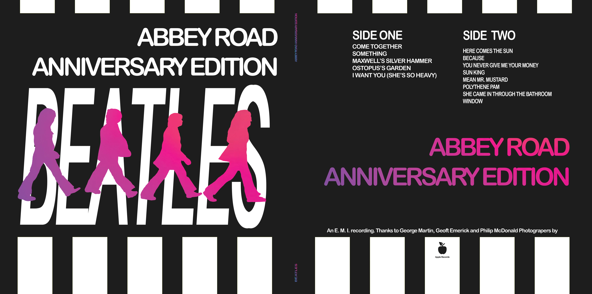
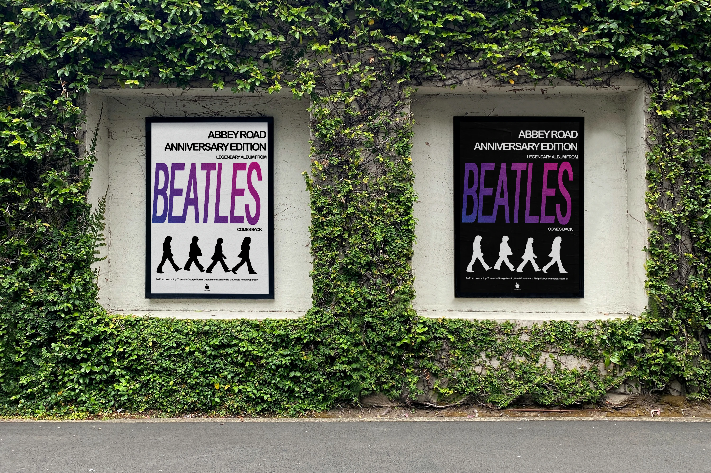
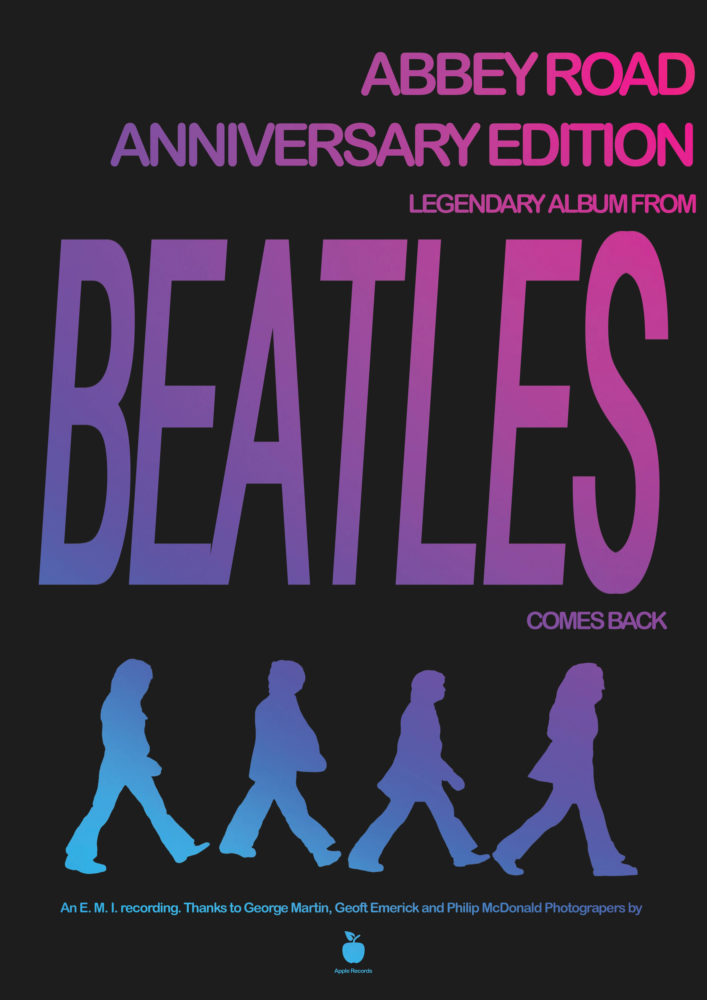
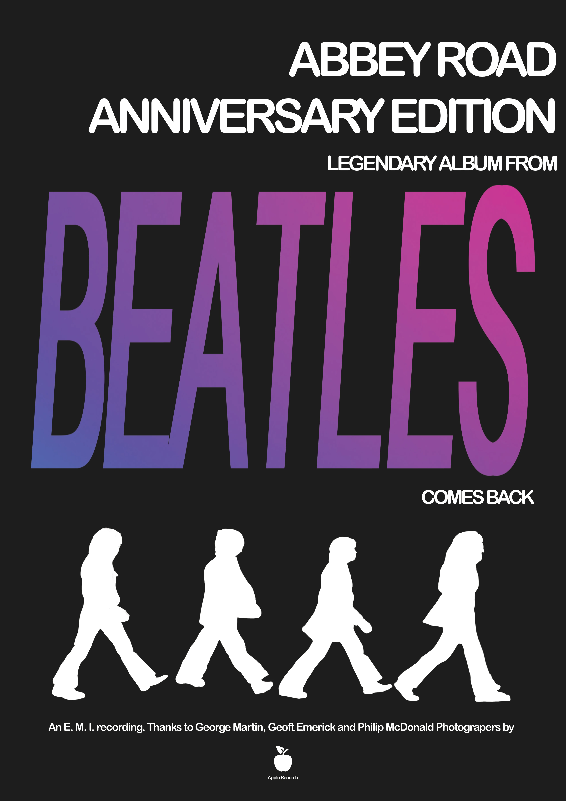
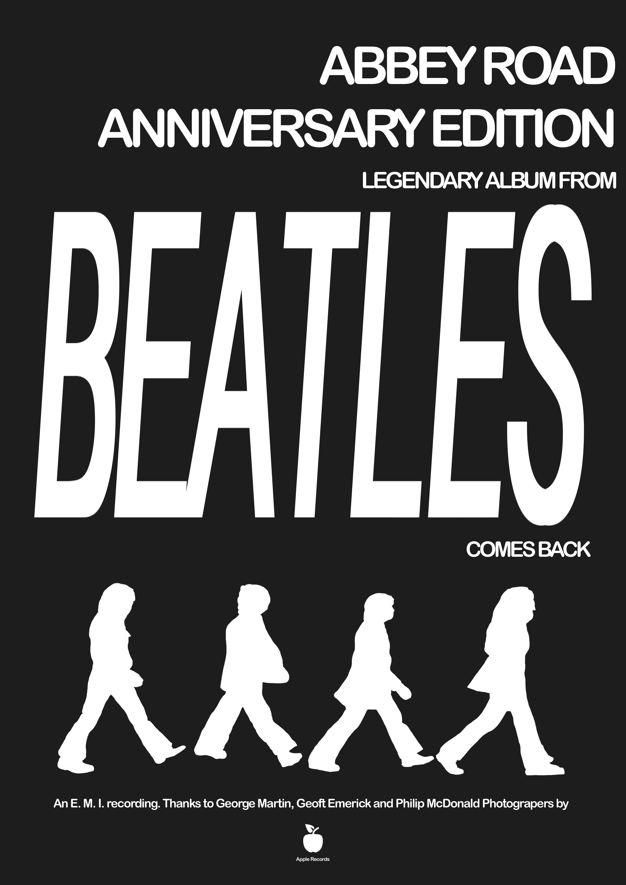
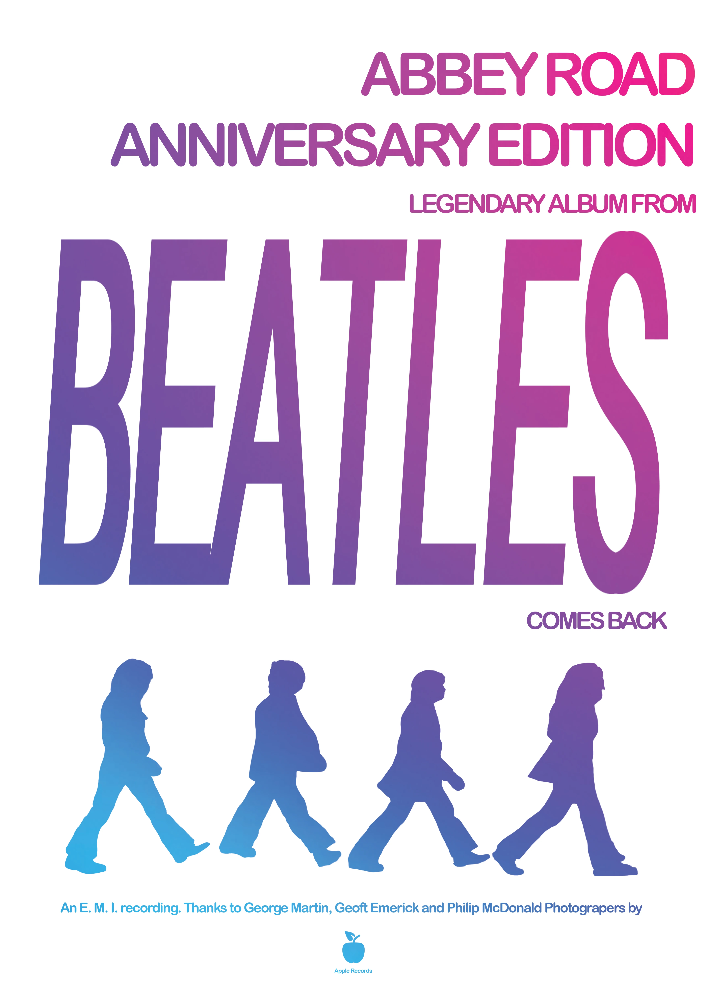
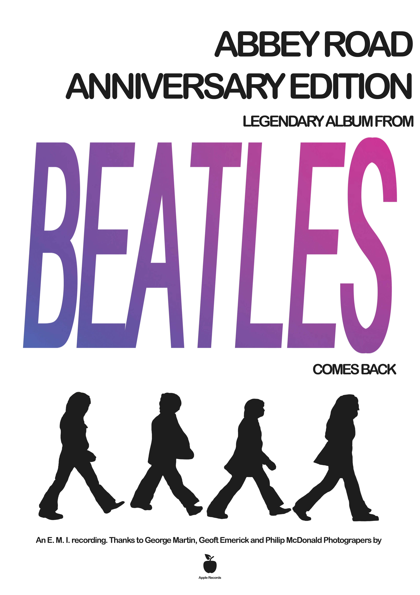
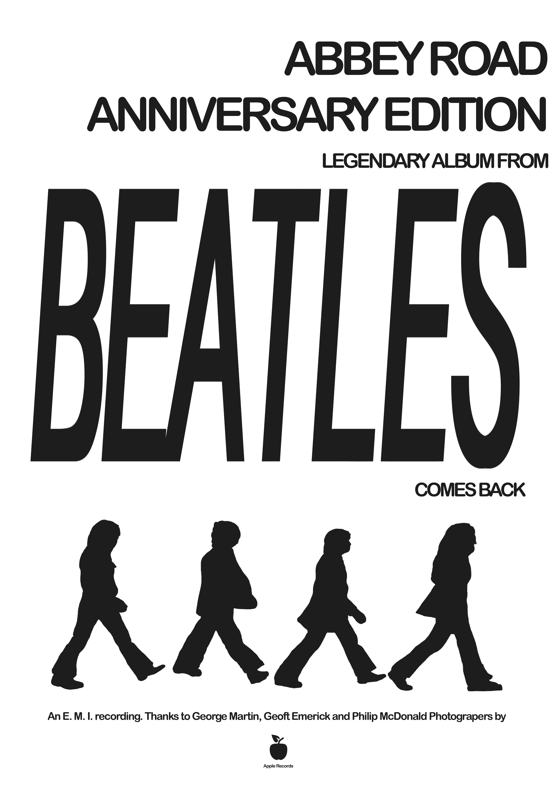

Abbey Road
Redesign ikonického alba The Beatles z roku 1969. Moderní reinterpretace hudebního dědictví — nové LP, obal a série plakátů. Osobní projekt, nikoli komerční zakázka.

Osobní projekt / fan art
Tento projekt vznikl jako vizuální studie a pocta legendární kapele Beatles. Nejedná se o oficiální ani komerční zakázku, nýbrž o fan art koncept, jehož cílem bylo procvičit práci s typografií, kompozicí a atmosférou. Chtěl jsem zachovat ikonický status původního alba, ale vtisknout mu moderní, minimalistickou tvář.
Vinyl & obal

Detailní pohled na zpracování samotné desky a obalu. Důraz na čisté linie a výrazný kontrast, který nechává vyniknout podstatu díla.
Série plakátů
Doprovodný vizuál k redesignu — šest variant pracujících s plným gradientem, částečným gradientem a čistě černobílou verzí.


Černá / gradient
Černá / částečný gradient
Černá / bílá
Bílá / gradient
Bílá / částečný gradient
Bílá / černá